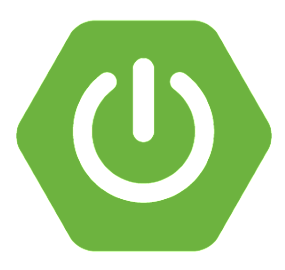
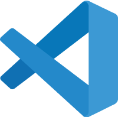

BACK-END & AI DEV.
PORTFOLIO
SCROLL DOWN
ABOUT
ME
“ 불편함은 변화의 기회 ”
안녕하세요. 신입 백엔드 & AI 개발자 김정희입니다.
불편함을 느낀다면 그것은 변화하고 더 나아갈 수 있는 또 하나의 기회라는 가치관을 가지고 살아오고 있습니다.
이는 개발자로서의 제 모토이기도 합니다. 사용자의 불편함을 민감하게 감지하고, 이를 개선할 수 있는 혁신적인 솔루션을 만들어내는 것이 제 목표입니다.
불편함을 마주했을 때, 저는 이를 피하지 않고 정면으로 맞서 해결책을 찾아냅니다. 이 과정에서 새로운 기술을 배우고, 더 효율적인 방법을 고민하며 끊임없이
성장하고 있습니다.
불편함을 기회로 삼아 더 나은 서비스를 만들어내는 개발자가 되겠습니다.
- #끈기있는 #Persistent
- #혁신적인 #Innovative
- #성장 지향적인 #Growth-oriented
TECH STACK
아이콘에 마우스를 올리면 자세한 설명이 나옵니다.
-
JAVA
객체지향 프로그래밍 언어로, 웹 애플리케이션의 백엔드 로직 구현에 사용하였습니다.
-

PYTHON
다목적 프로그래밍 언어로, AI 서빙 애플리케이션의 백엔드 로직 구현과 모델 통합에 활용하였습니다. RESTful API 개발과 데이터 처리에도 사용하였습니다.
-

SPRING
자바 기반의 웹 애플리케이션 프레임워크로, MVC 패턴을 적용한 웹 서비스 개발에 사용하였습니다. 의존성 주입을 통해 모듈화된 코드를 작성하였습니다.
-

SPRING BOOT
SPRING 프레임워크의 간소화 버전으로, 마이크로서비스 아키텍쳐 기반의 RESTful API를 개발하였습니다. 내장 서버를 이용해 빠른 개발이 가능하였습니다.
-

FAST API
PYTHON 기반의 현대적이고 빠른 웹 프레임워크로, 비동기 처리를 활용한 고성능 API를 구축하였습니다.
-

JSON
JSON의 객체 구조를 잘 파악할 수 있으며, javascript에서 활용할 수 있습니다.
-

React.js
React 구조와 여러가지 hook들을 잘 알고 있으며, 범용적이고 재사용가능한 컴포넌트 설계를 할 수 있습니다.
-

HTML5
웹접근성, 표준성을 준수하며 시멘틱태그를 이용해 마크업 할 수 있습니다.
-

CSS3
position, display를 적절히 사용하여 반응형웹을 적용할 수 있습니다.
-

JavaScript
JavaScript의 배열, 메소드, DOM을 이해하며 다양한 상황에 적용할 수 있습니다.
-
WebRTC
실시간 통신을 위한 웹 표준 기술로, 브라우저 간 직접적인 비디오와 오디오 통화 기능을 구현하였습니다.
-

Socket.IO
실시간 양방향 이벤트 기반 통신 프레임워크로, 실시간 영상 통화 및 채팅 애플리케이션을 개발하였습니다. 서버와 클라이언트 간 실시간 데이터 동기화에 활용하였습니다.
-

AWS
EC2 인스턴스를 사용해 웹 서버를 호스팅하고, RDS를 통해 DB를 관리하였습니다.
-

FIREBASE
실시간 DB를 이용한 실시간 데이터 동기화 기능을 구현하였습니다. Cloud Functions를 활용해 serverless backend 로직을 작성하였습니다.
-

MySQL
관계형 데이터베이스 관리 시스템으로, 사용자 정보와 게시글 데이터를 효율적으로 저장하고 관리하였습니다. 복잡한 조인 쿼리를 작성하여 데이터를 분석하였습니다.
-

VS Code
React.js와 python 개발에 활용하고 있으며, 즉시 반영되는 Live Server 툴을 이용하고 있습니다.
-

Figma
프로토타이핑 시안을 작업 할 수 있습니다.
-

Git
commit, push, pull, clone 등 git 명령어를 사용하여, 팀의 협업툴로 이용하고 있습니다.
PROJECT


✔️ DB는 MySQL을 사용했으며, 실시간 영상 통화 구현을 위해 WebRTC와 WebSocket (Socket.IO) 서버를 사용하였습니다.
✔️ 실시간 음성-텍스트 변환(STT) 기능을 구현하고, 사용자의 모국어에 따라 실시간 번역을 제공하여 언어 장벽 없는 소통을 가능하게 하였습니다.
✔️ Mediapipe 에서 제공하는 Face Landmark Detection으로 사용자의 얼굴 좌표 정보 478개를 실시간으로 받아 Three.js 라이브러리를 사용하여 캔버스에 이미지를 그려 face mask를 구현하였습니다.
✔️ 반응형웹으로 만들어져 PC, 모바일 모든 환경에서 사용가능합니다.
프로젝트 경험 및 성과
본 프로젝트는 Gemini competition 참여를 위해 진행되었으며, 제한된 시간 내에 핵심 기능을 구현하는 도전적인 과정이었습니다. 이를 통해 다음과 같은 귀중한 경험과 역량을 얻을 수 있었습니다.
1. 실시간 영상통화 시스템 구현
WebRTC와 Socket.IO를 활용하여 안정적이고 효율적인 실시간 영상통화 시스템을 구현했습니다.2. Three.js를 활용한 실시간 Face Mask 구현
Mediapipe의 Face Landmark Detection과 Three.js를 결합하여 실시간 유저의 얼굴을 추적하는 face mask 기능을 개발했습니다.3. 실시간 음성-텍스트 변환 (STT) 및 번역 시스템 구현
실시간 영상통화에서 음성을 텍스트로 변환하고, 대화 상대의 모국어에 따라 실시간 번역을 제공하는 기능을 구현했습니다. OpenAI의 Whisper API를 활용한 고정확도 음성 인식과 변환 및 번역된 텍스트를 지연 없이 실시간으로 사용자 인터페이스에 표시할 수 있도록 WebSocket 을 통해 구현하였습니다.4. 효율적인 협업 능력 향상
타이트한 일정 속에서 팀원들과 긴밀히 소통하며 각자의 강점을 살려 업무를 분담하고 통합하는 과정을 통해 실질적인 협업 능력을 키웠습니다.5. 문제 해결 능력 강화
복잡한 기술 스택(Python, React.js, WebRTC, Socket.IO, Three.js 등)을 활용하는 과정에서 발생한 다양한 기술적 문제들을 팀원들과 함께 해결하며 문제 해결 능력을 크게 향상시켰습니다.6. 새로운 기술에 대한 빠른 적응력
AI 모델, WebRTC, Mediapipe 등 처음 다루는 기술들을 프로젝트에 적용하면서 새로운 기술을 신속하게 습득하고 실제 서비스에 구현하는 능력을 개발했습니다.7. 사용자 중심 설계 경험
반응형 웹 구현을 통해 다양한 디바이스에서의 사용자 경험을 고려한 설계와 개발을 경험했습니다.8. 프로젝트 완성도 제고
주어진 시간 내에 핵심 기능을 완성하고, 팀원들과 서로의 부족한 부분을 보완하며 프로젝트의 완성도를 높이는 과정을 통해 실무적인 프로젝트 관리 능력을 향상시켰습니다.9. 지속적인 개선 의지
프로젝트 종료 후에도 과금 요소를 저과금으로 변경하고 실제 도메인으로 서비스를 운영할 계획을 세우는 등, 지속적인 서비스 개선과 운영에 대한 의지와 계획을 가지고 있습니다.이 프로젝트를 통해 기술적 성장뿐만 아니라 팀워크, 시간 관리, 그리고 실제 서비스 구현에 대한 전반적인 이해를 깊이 있게 경험할 수 있었습니다.
- #Python
- #React.js
- #WebRTC
- #Socket.IO
- #Whisper
- #Face Landmark Detection
- #Three.js
- #반응형웹

✔️ 실시간 주식 정보 제공 시스템 구축
-Firebase Realtime Database를 활용하여 실시간으로 현재 주가 정보를 제공하는 시스템 구현-전일 종가 대비 현재 주가의 등락률 및 변동 금액을 실시간으로 계산하여 표시
-React 훅을 사용한 효율적인 상태 관리로 실시간 데이터 업데이트 구현
✔️ 검색 기능 개발
-종목별 검색 기능 구현으로 사용자 경험 향상✔️ 데이터 시각화
-Chart.js를 활용하여 종목별 종가 차트 구현-D3.js를 사용한 동적이고 인터랙티브한 워드 클라우드 개발
-주요 뉴스 키워드를 시각적으로 표현하여 직관적인 정보 전달
프로젝트 경험 및 성과
1. 실시간 데이터 처리 능력 향상
Firebase Realtime Database를 활용한 실시간 데이터 동기화 경험 획득 대량의 주식 데이터를 효율적으로 처리하고 표시하는 능력 개발2. 프론트엔드 개발 역량 강화
React.js를 활용한 복잡한 UI 구현 경험 컴포넌트 기반 아키텍처 설계 및 상태 관리 기술 향상3. 데이터 시각화 능력 개발
Chart.js와 D3.js를 활용한 다양한 형태의 데이터 시각화 구현 사용자 친화적인 인터페이스 설계 능력 향상4. 사용자 중심 설계 경험
반응형 웹 구현을 통해 다양한 디바이스에서의 사용자 경험을 고려한 설계와 개발을 경험했습니다.5. 팀 협업 및 통합 능력 강화
다양한 기술 스택(Python, React.js, Firebase, AI 모델)을 활용한 프로젝트에서의 효과적인 협업 경험6. 금융 도메인 지식 습득
주식 시장 데이터 처리 및 분석 과정에서 금융 도메인에 대한 이해도 증진 실제 금융 서비스 개발에 필요한 규제 및 보안 요구사항에 대한 인식 제고이 프로젝트를 통해 실시간 데이터 처리, 복잡한 프론트엔드 개발, 그리고 데이터 시각화에 대한 실질적인 경험을 쌓을 수 있었습니다. 특히 Firebase를 활용한 실시간 데이터 동기화와 차트 라이브러리를 이용한 데이터 시각화 구현 과정에서 기술적 역량이 크게 향상되었습니다. 또한 금융 데이터를 다루는 과정에서 얻은 도메인 지식은 향후 유사한 프로젝트나 금융 관련 서비스 개발에 있어 큰 강점이 될 것입니다. 이러한 다각도의 경험은 제가 데이터 중심의 웹 서비스 개발에 특화된 개발자로 성장하는 데 중요한 밑거름이 되었습니다.
- #Python
- #React.js
- #FireBase
- #ChatGPT
- #반응형웹
본 프로젝트에서 저는 출퇴근 관리 파트를 담당하였으며, 특히 실시간으로 관리되는 근무 상태 그래프 개발과 주 52시간제 법령 준수를 위한 로직 구현에 주력하였습니다.
✔️ 근무 상태 그래프 진행률 관리 기능 구현
-React의 useState 훅을 활용하여 그래프 진행률(progress)을 동적으로 관리-useRef 훅을 사용하여 setInterval 함수의 참조를 저장하고 효율적으로 관리
✔️ 성능 최적화
-useRef 훅을 활용하여 불필요한 리렌더링 방지-useEffect 훅의 의존성 배열과 clearInterval 함수를 이용한 메모리 누수 방지
✔️ 메모리 누수 방지
-ProgressBar 컴포넌트에서 setInterval을 사용하여 주기적으로 근무 시간을 체크하고 진행률을 업데이트-useEffect 훅의 클린업 함수에서 clearInterval을 사용하여 컴포넌트 언마운트 시 타이머 제거
-이를 통해 컴포넌트 생명주기와 무관한 타이머 실행으로 인한 메모리 누수 방지
프로젝트 경험 및 성과
1. TDD(Test-Driven Development) 방식의 적용
처음으로 TDD 방식을 적용하여 개발을 진행하였습니다. 단위 테스트를 먼저 작성하고 실제 코드를 구현하는 과정을 통해 코드의 신뢰성과 유지보수성을 향상시켰습니다. 테스트 케이스 작성 능력이 향상되었으며, 버그를 사전에 방지하는 효과를 경험했습니다. 리팩토링에 대한 두려움을 줄이고, 더 나은 설계를 고민하는 계기가 되었습니다.2. React 훅에 대한 심도 있는 이해
useState, useRef, useEffect 등 React 훅의 실제 활용 경험을 통해 상태 관리, 부수 효과 처리, 그리고 컴포넌트 생명주기에 대한 깊은 이해를 얻었습니다.3. 성능 최적화 및 메모리 관리 기법 습득
불필요한 리렌더링 방지와 메모리 누수 방지 기법을 학습하고 실제 프로젝트에 적용하는 능력을 키웠습니다. 특히 setInterval과 clearInterval을 적절히 사용하여 타이머 관리의 중요성을 깨달았습니다.4. 실시간 데이터 처리 능력 향상
실시간으로 업데이트되는 근무 상태 그래프 구현을 통해 동적 데이터 처리 능력을 향상시켰습니다. 주 52시간제 준수를 위한 실시간 근무시간 계산으로 복잡한 비즈니스 로직 처리 능력을 강화했습니다.5. 컴포넌트 생명주기 관리 능력 강화
useEffect 훅의 클린업 함수를 활용하여 컴포넌트의 마운트, 업데이트, 언마운트 시점에 따른 적절한 리소스 관리 방법을 학습하였습니다.6. 팀 프로젝트 협업 능력 강화
Git을 활용한 버전 관리와 브랜치 전략을 학습하고 적용했습니다. 주간 스프린트 회의에 참여하여 작업 진행 상황을 공유하고, 팀원들의 피드백을 수렴하여 개선사항을 도출했습니다.7. 문제 해결 능력 향상
그래프 구현, 실시간 데이터 처리, 메모리 관리 등 다양한 기술적 문제들을 해결하며 문제 해결 능력을 크게 향상시켰습니다. 주 52시간제 관련 복잡한 비즈니스 요구사항을 분석하고 이를 코드로 구현하는 과정에서 실제 업무 환경에서의 문제 해결 능력을 기를 수 있었습니다.8. 비즈니스 로직 구현 능력 향상
주 52시간제라는 실제 법령을 코드로 구현하면서 비즈니스 요구사항을 정확히 이해하고 이를 기술적으로 구현하는 능력을 키웠습니다. 복잡한 시간 계산 로직을 설계하고 구현하는 과정에서 알고리즘 설계 능력이 향상되었습니다. 법령 변경 가능성을 고려한 유연한 코드 설계의 중요성을 인식하고, 이를 실제 개발에 적용하는 경험을 쌓았습니다.이 프로젝트를 통해 React.js를 활용한 프론트엔드 개발 능력을 크게 향상시켰으며, 특히 성능 최적화, 메모리 관리, 실시간 데이터 처리에 대한 실질적인 경험을 쌓을 수 있었습니다. 또한 TDD 방식의 개발과 체계적인 팀 협업 과정을 경험함으로써, 전문적인 소프트웨어 개발 프로세스에 대한 이해도를 높였습니다. 특히 주 52시간제 관련 로직 구현을 통해 실제 비즈니스 요구사항을 기술적으로 해결하는 능력을 키웠습니다.
- #JAVA
- #Springboot
- #JPA
- #React.js


✔️ 서버 사이드 렌더링(SSR) 구현
-Thymeleaf를 활용한 SSR 구현으로 초기 페이지 로딩 속도 개선✔️ 펀딩 프로젝트 등록 및 심사 시스템 개발
-프로젝트 등록 폼 구현 및 유효성 검사 로직 개발-관리자 심사 프로세스 구현을 통한 프로젝트 품질 관리 시스템 개발
✔️ 다중 리워드 선택 시스템 구현
-사용자가 여러 리워드를 동시에 선택할 수 있는 유연한 시스템 설계복잡한 리워드 조합에 대한 총액 계산 로직 구현
✔️ 결제 시스템 연동을 위한 데이터 처리 로직 개발
-사용자가 선택한 다중 리워드 정보를 포함한 장바구니 데이터를 결제 폼으로 전송하는 로직 구현-카카오페이 API를 사용하는 결제 모듈과의 연동을 위한 데이터 구조화 및 전처리 작업 수행
프로젝트 경험 및 성과
1. 복잡한 비즈니스 로직 구현 경험
다중 리워드 선택 시스템을 구현하면서, 복잡한 비즈니스 요구사항을 효율적으로 처리하는 로직을 설계하고 구현하는 능력을 키웠습니다.2. Spring Framework 활용 능력 강화
Spring Framework의 다양한 기능을 활용하여 펀딩 프로젝트 등록, 심사, 조회 시스템을 구현하면서, 대규모 웹 애플리케이션 개발에 필요한 아키텍처 설계 및 구현 능력을 향상시켰습니다.3. Thymeleaf 활용 능력 개발
Thymeleaf의 장점인 서버 사이드 렌더링, natural templating, Spring Framework와의 통합, 강력한 레이아웃 기능 등을 직접 활용하며 효율적인 뷰 레이어 개발 능력을 향상시켰습니다.4. 결제 시스템 연동을 위한 데이터 처리 경험
다중 리워드 선택 시스템에서 생성된 복잡한 장바구니 데이터를 결제 시스템에 적합한 형태로 가공하고 전송하는 과정을 통해, 데이터 처리 및 시스템 간 연동에 대한 이해도를 높였습니다.그리고 외부 결제 API와의 연동을 위한 데이터 구조 설계 및 전처리 과정을 경험하며, 시스템 통합에 필요한 실질적인 기술을 습득했습니다.
6. 문제 해결 능력 향상
복잡한 펀딩 시스템 구현, 외부 API 연동을 위한 데이터 처리 등 다양한 기술적 문제들을 해결하며 문제 해결 능력을 크게 향상시켰습니다.이 프로젝트를 통해 서버 사이드 렌더링, Spring Framework, 그리고 Thymeleaf를 활용한 백엔드 개발 능력을 크게 향상시켰으며, 특히 복잡한 비즈니스 로직 구현과 시스템 간 데이터 연동에 대한 실질적인 경험을 쌓을 수 있었습니다. 다중 리워드 선택 시스템 개발과 결제 시스템 연동을 위한 데이터 처리 경험은 복잡한 비즈니스 요구사항을 효과적으로 구현할 수 있는 능력을 키우는 데 큰 도움이 되었습니다.
- #JAVA
- #Spring
- #Thymeleaf
CONTACT
E-MAIL : hongi_@naver.com